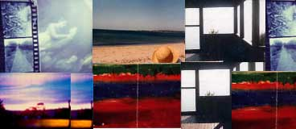

- technology -
Assisting TSA's student members is a strong support system of educators, alumni, parents and business leaders who believe in the importance of a technologically literate society. .org The Technology Student Association (TSA) is a national non-profit organization devoted exclusively to the needs of elementary, middle and high school students with a dedicated interest in technology. Assisting TSA's student members is a strong support system of educators, alumni, parents and business leaders who believe in the importance of a technologically literate society. .
|  |
|
It lays out a logico-historical thread to help make some sense of our switched-on disjunctive techno world. Electronic Civil Disobedience is promised for the Winter of 1995. The Projects sections is fairly lively with such titles as ADDICTIONMANIA, USELESS TECHNOLOGY, and CULTRONIX. It contrasts pseudo ads for hi-tech weaponry with pseudo catalogue listings for hi-tech kitchen appliances. ADI Space Based Laser next to a Farberware Electric Peeler next to the Pershing 2 Guided Missile System next to an Intercom Door Chime next to a Hospitech Magnetic Resonance Imaging Device next to the Kitchen Aid Stand Mixer next to a Thermonuclear Warhead Etc. |
|
Journal of Geophysical Research - Planets (AGU) Journal of Molecular Modelling homepage. Journal of Solid State Electrochemistry LCGC Past Issues Nature Plenum Publishing Reviews in Computational Chemistry. Russian Journal of Electrochemistry Science Springer Verlag Journal Search WILEY -Interscience VCH Electrochemistry Resources ECOS - Elsevier Electrochemistry OnLine Service Electrochemical Science and Technology Information Resource (ESTIR) - General information about electrochemical science and technology. University of Liverpool - Electrochemistry - The Electrochemistry Research Group of Professor David J Schiffrin at the University of Liverpool, Department of Chemistry. . |
|
Department of Commerce, International Trade Administration) Eli Whitney's Patent for the Cotton Gin (National Archives and Records Administration) Elizabeth Cady Stanton and Susan B. Johnson National Historical Park (National Park Service, Lyndon B. Time (National Institute of Standards and Technology and U. Air Force History Support Office (Department of the Air Force) The U. Electoral College (National Archives and Records Administration) The U. |
read more at: http://www.education-world.com/technology/